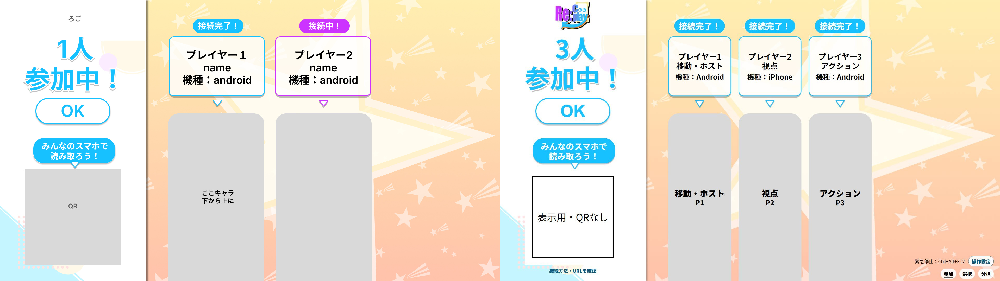
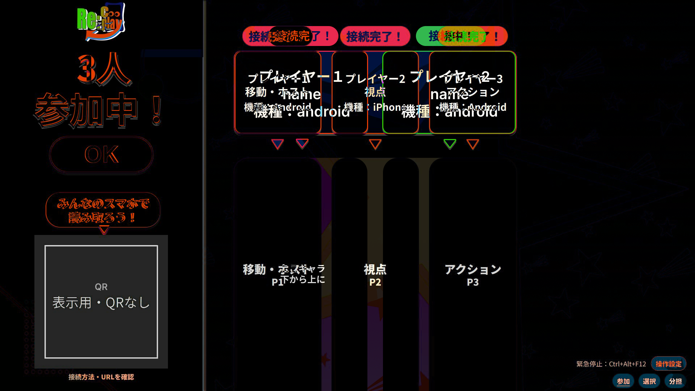
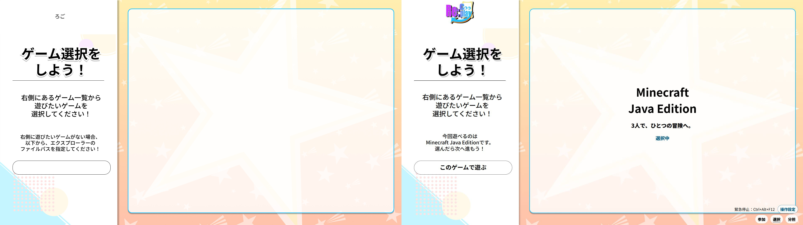
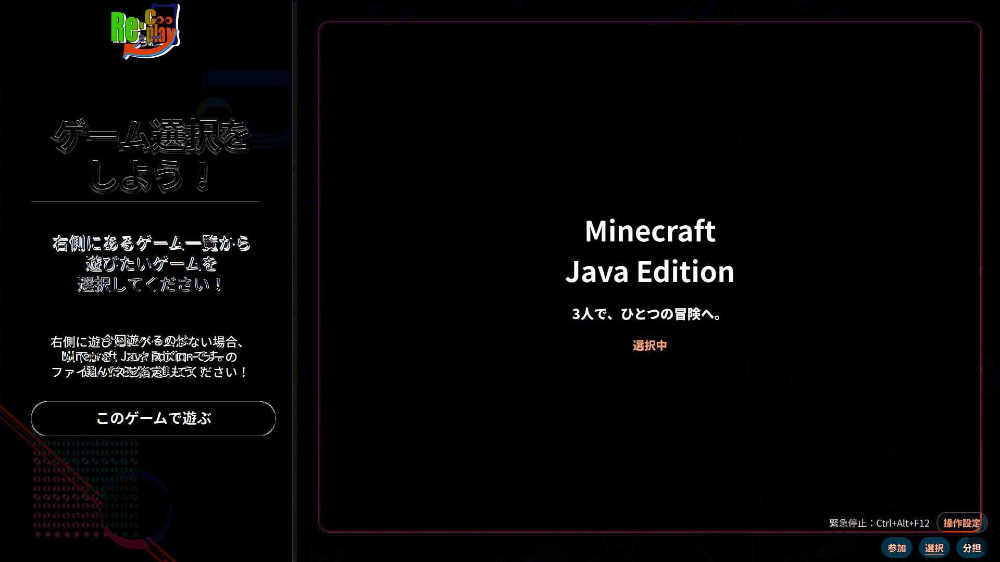
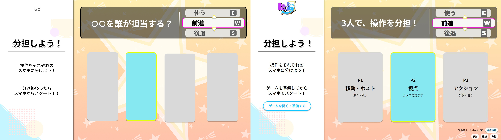
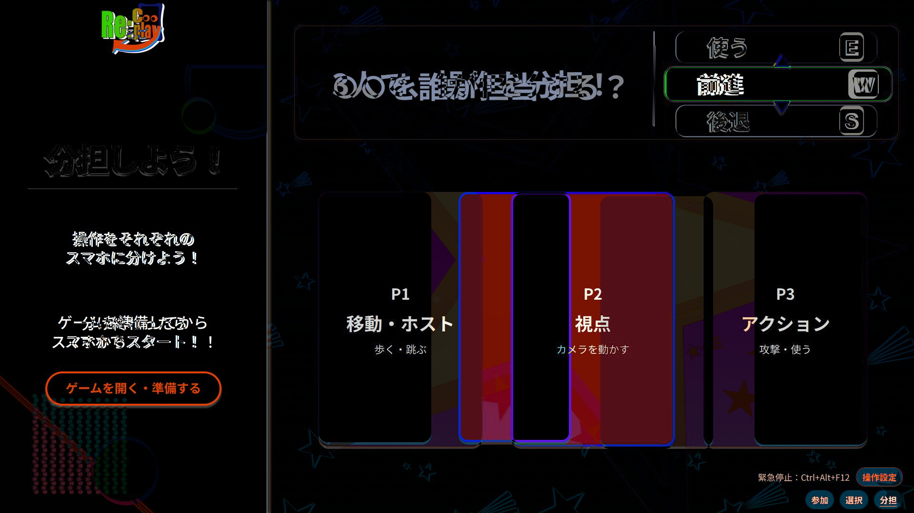
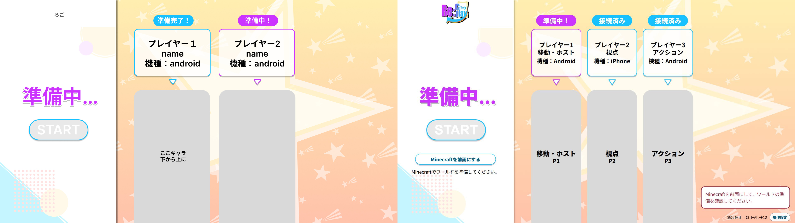
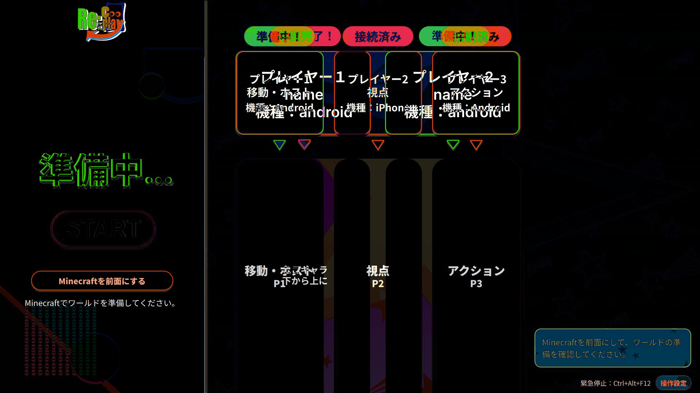
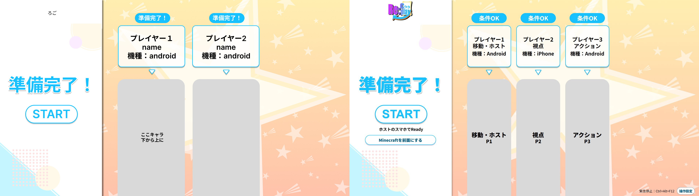
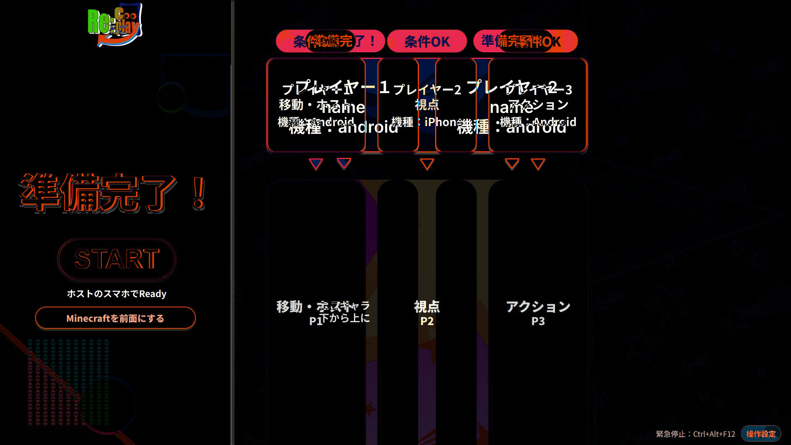

参加



差分画像（マスク・強調なし）

左：提供原案1920×1080 ／ 右：表示確認用の実装1920×1080。比較画像は縮小・切り取りせず3840×1080で保存。画像を開くと原寸で確認できます。実機の動作証明ではありません。










原案と現在の文字内容・人数・QR・安全導線の差も全画素の差分に含みます。画素差だけでは採点しません。計測はgeometry-audit.json、書体・文字サイズ・色・矩形はmetrics.json、評価はpc-fidelity-progress.mdをご覧ください。